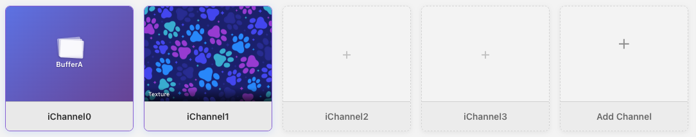
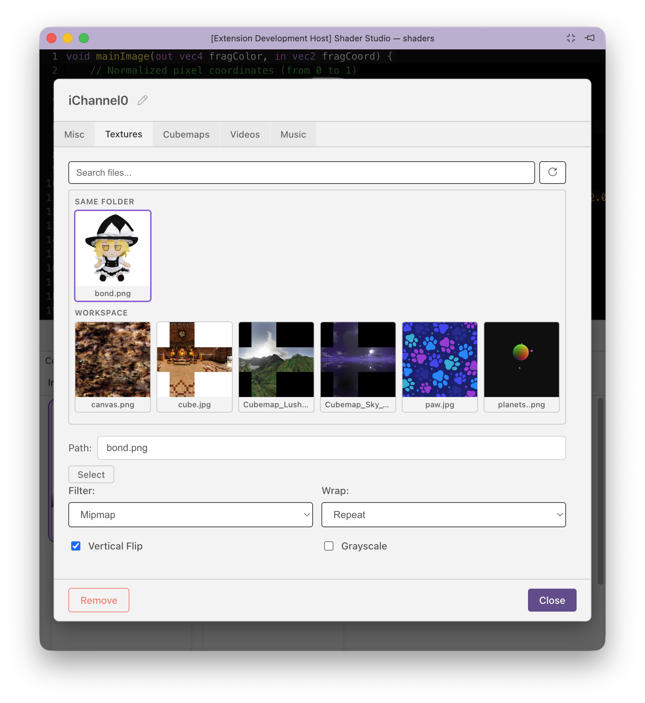
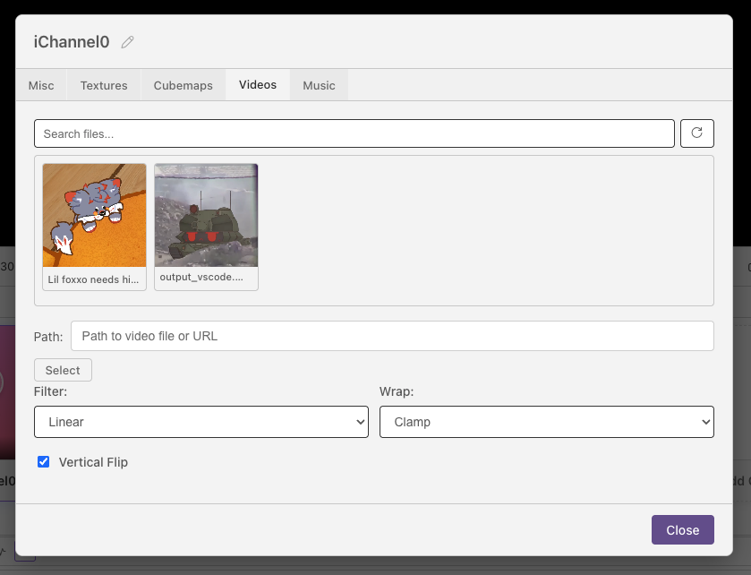
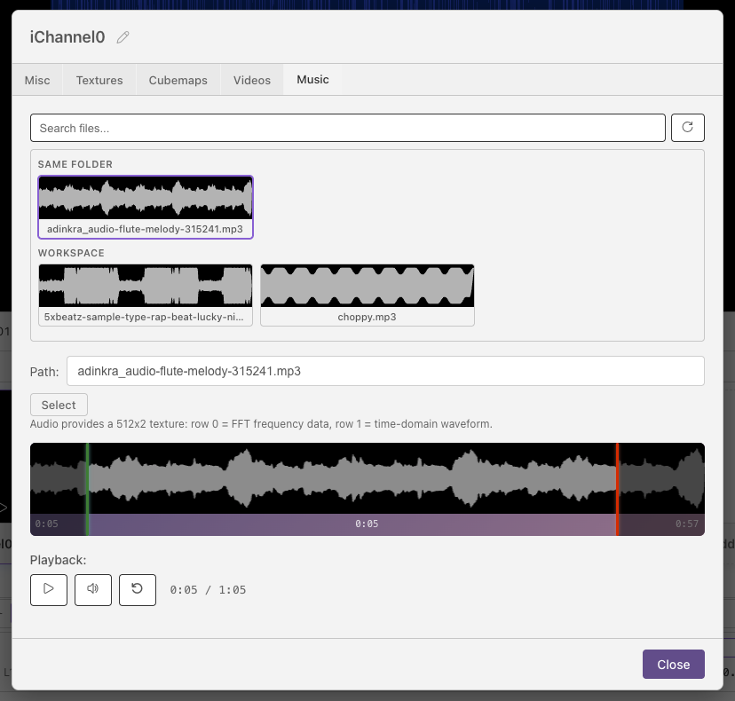
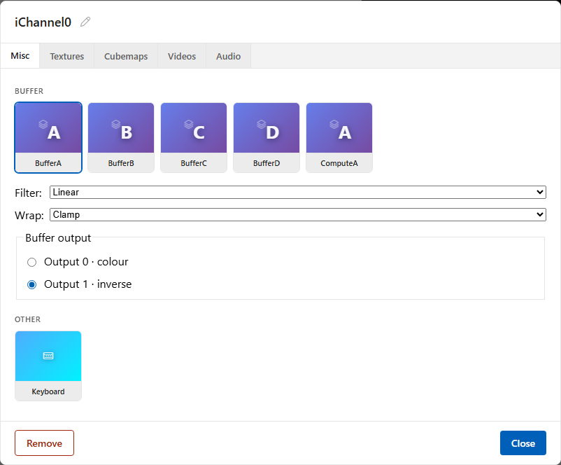

Channels¶

Channels let a pass read images, video, audio, buffers, cubemaps, volumes, keyboard state, webcam frames, or microphone data.
Each pass has its own configured names. A channel named albedo exposes
albedo.size, albedo.time, and albedo.loaded in GLSL, Slang, and WGSL.
GLSL and Slang also expose albedo.sampler. Slang has albedo.texture and
sampling methods. WGSL keeps native handles separate: albedoTexture and
albedoSampler. Slang and WGSL share the sample2D and sampleCube function
families described below. These are Shader Studio conveniences, not language built-ins.
Vertex hooks share the pass's channel configuration. In Slang and WGSL vertex or compute code, use explicit levels or gradients; implicit derivative sampling is fragment-only. See Vertex Shaders for each hook signature.
What Channels Can Do¶
Channels are useful in a few different ways:
- Add source media, such as images, videos, audio files, cubemaps, and volumes.
- Connect passes together by reading the output of a buffer.
- Build feedback effects by letting a buffer read its own previous frame.
- Make shaders interactive by sampling keyboard state.
- Use per-input metadata such as resolution and playback time.
Adding a Channel¶
Open the pass you want to configure, then use its Channels section:
- Click + Add Channel to add an input, or use the configure button on an existing channel row.
- Choose what the channel should read: texture, video, audio, cubemap, volume, buffer, or keyboard.
- Set the file, source pass, or options for that input.
- Sample it with the matching channel name using the examples below.
Click an existing channel to edit or remove it. Channels can also be renamed, as long as the name is a valid identifier for the shader language.
Note
Channel uniforms are available automatically. For most channel types, you do not need to declare uniform sampler2D iChannelN; in your shader.
Sampling Channels in GLSL¶
The channel slot tells you which uniform to sample. If you add a texture to iChannel0, sample iChannel0. If you add keyboard state to iChannel1, sample iChannel1.
Use iChannelResolution[N].xy when the input has a different size than the canvas:
Named GLSL channels group their combined sampler and metadata:
vec4 color = texture(albedo.sampler, uv);
vec2 dimensions = albedo.size.xy;
bool ready = albedo.loaded != 0;
float playbackSeconds = albedo.time;
The numbered iChannelN, iChN, iChannelResolution, iChannelTime and
sampleIChannelN APIs remain available. Existing named calls to texture,
textureLod, textureGrad, textureSize and texelFetch also accept the channel
object through compatibility overloads (where the texture shape and shader stage
support the operation). For other native operations or your own functions taking
a sampler parameter, pass albedo.sampler explicitly.
Sampling Channels in Slang¶
float4 color = sample2D(albedo.texture, albedo.sampler, uv);
float4 sharp = sample2DLevel(albedo.texture, albedo.sampler, uv, 0.0);
float4 gradient = sample2DGrad(albedo.texture, albedo.sampler, uv, ddx(uv), ddy(uv));
// Optional methods use the channel's configured sampler.
float4 same = albedo.Sample(uv);
float4 level = albedo.SampleLevel(uv, 2.0);
float4 grad = albedo.SampleGrad(uv, ddx(uv), ddy(uv));
uint2 dimensions = albedo.size;
float playbackSeconds = albedo.time;
bool ready = albedo.loaded;
Slang channel objects are direct globals. inputs.albedo is no longer
available: migrate it to albedo (and likewise change inputs.iChannel0 to
iChannel0). The configured name must be a valid, non-reserved Slang global;
Shader Studio reports a diagnostic when it is not. This does not change the
.sha.json inputs field, which continues to hold channel configuration.
A local variable with the same name shadows the channel; rename that local
if you need to sample the channel from that scope.
The methods also accept an explicit sampler as their first argument:
albedo.Sample(reference.sampler, uv). The spelling is SampleLevel, not SampleLod.
Sampling Channels in WGSL¶
let color = sample2D(albedoTexture, albedoSampler, uv);
let sharp = sample2DLevel(albedoTexture, albedoSampler, uv, 0.0);
let gradient = sample2DGrad(albedoTexture, albedoSampler, uv, dpdx(uv), dpdy(uv));
let dimensions = albedo.size; // vec2u
let playbackSeconds = albedo.time; // f32
let ready = albedo.loaded; // bool
Use albedoTexture and albedoSampler for sampling, and albedo for metadata. Legacy albedoSample, albedoSampleLevel, albedoSampleGrad,
albedoLoad, albedoSize(), albedoTime() and albedoLoaded() remain supported.
Shared Sampling Rules¶
| Slang and WGSL function | Arguments after texture and sampler |
|---|---|
sample2D |
uv |
sample2DLevel |
uv, lod |
sample2DGrad |
uv, dx, dy |
sampleCube |
direction |
sampleCubeLevel |
direction, lod |
sampleCubeGrad |
direction, dx, dy |
2D convenience functions and Slang methods use bottom-left UV coordinates,
matching mainImage pixel coordinates. Cubemaps use direction vectors. Native texture operations
use their language's native coordinates.
Texture, video, cubemap, and buffer channels expose per-input filter and wrap
settings. Buffer inputs support linear or nearest filtering and clamp or
repeat wrapping; their defaults are linear and clamp. Mipmaps are not yet
available for buffer outputs. Each shared function takes an explicit sampler, so
another channel's sampler can be used without changing the texture. Two inputs
can therefore read the same buffer with different sampling settings.
Implicit sample2D/sampleCube and Slang Sample require a fragment stage
and uniform control flow: do not call them inside a branch or loop whose execution
differs between neighboring fragments (for example, a condition based on pixel
coordinates or sampled data). WGSL validation, including Slang compiled for WebGPU,
can reject these calls with a derivative-uniformity error. Move the sample before
the branch, or use sample2DLevel(..., 0.0) / Slang SampleLevel(uv, 0.0) when
you need to sample inside it. Explicit level zero still uses the sampler's filtering;
it does not make a read texel-exact.
Use Level or explicit Grad operations in vertex and compute code. For WGSL
<name>Sample calls in compute code, use <name>SampleLevel(uv, 0.0) or the shared level function.
Derivative expressions themselves (ddx, dpdx, etc.) still require fragment code.
Channel Metadata¶
| Field | GLSL | Slang | WGSL | Meaning |
|---|---|---|---|---|
.size |
vec3 |
uint2 (volumes: uint3) |
vec2u (volumes: vec3u) |
Texture dimensions; cubemaps report face dimensions, volumes include depth. |
.time |
float |
float |
f32 |
Audio/video playback position in seconds; zero for other inputs. |
.loaded |
int (0/1) |
bool |
bool |
A usable resource is available. |
Metadata updates with the current frame. Pausing or reaching the end of a video keeps its last frame available. A video reports loaded once its first frame is ready to sample. A configured but unavailable input reports unloaded; a name absent from the configuration is a compile error. Channels support 2D textures, cubemaps, and 3D volume inputs. The Volumes tab loads uncompressed R8 or RGBA8 KTX2 files, with filtering and wrapping controls and an interactive 3D preview. See Volume inputs for supported formats and GLSL, Slang, and WGSL examples.
Choosing a Channel Type¶
Use a channel type based on what the shader needs to sample:
| Type | Use it for | GLSL sampler |
|---|---|---|
| Texture | Static images, noise maps, lookup tables, masks | sampler2D |
| Video | Moving footage sampled like an image | sampler2D |
| Audio | FFT and waveform data from an audio file | sampler2D |
| Volume | 3D density, noise, and color fields from KTX2 files | sampler3D sampled with a vec3 coordinate |
| Cubemap | Skyboxes and environment maps | samplerCube sampled with a vec3 direction |
| Buffer | Output from another pass, including feedback | sampler2D |
| Keyboard | Pressed, held, and toggled key state | sampler2D |
See Channel Metadata for the shared field meanings and types.
Texture Channels¶
Bind a static image file to a channel.

Supported formats: png jpg jpeg gif bmp webp tga hdr exr
| Option | Values | Default | Description |
|---|---|---|---|
filter |
mipmap / linear / nearest |
mipmap |
Texture filtering quality |
wrap |
repeat / clamp |
clamp |
Edge sampling behaviour |
vflip |
bool | false |
Flip the image vertically |
grayscale |
bool | false |
Convert to luminance (single channel) |
Tip
Use filter: nearest and wrap: repeat for data textures or pixel-art where blending between texels is undesirable.
Video Channels¶
Bind a video file. Sampled identically to a texture in GLSL.

Common formats: mp4 webm ogg mov
The container extension alone does not guarantee playback. The video and audio codecs inside the container must also be supported by the browser engine used by your Shader Studio host. Codec availability can differ between a normal browser, VS Code, Electron, and operating systems.
The channel editor includes playback controls — play, pause, next, mute, reset, and a time display. Playback is synced to the shader's play/pause state. The mute button persists to the config as muted: true/false (default false), so a channel's mute state survives reloads and resets.
Note
Pausing the shader pauses the video.
Audio Channels¶
Bind an audio file. The channel provides a 512×2 texture containing frequency and waveform data each frame. Audio files, Mic and Shared Audio use Shadertoy’s analyser settings: a 2048-point FFT, 0.8 smoothing, and a −100 to −30 dB range. The spectrum row exposes the first 512 bins (approximately 0 to iSampleRate / 4 Hz); bin n corresponds to n * iSampleRate / 2048 Hz. The waveform row holds the first 512 samples, with silence centered at roughly 0.5. This changes the frequency mapping from earlier builds that used a 1024-point FFT.

Common formats: mp3 wav ogg flac aac m4a — plus video containers
(mp4 webm mov) that contain an audio stream. Actual codec support depends on
the browser engine used by the host; a recognized extension does not guarantee
that its encoded audio can be decoded.
If a media file fails to load or its audio plays silently, convert it to a format supported by your target browser or VS Code build. For example, FFmpeg can create an MP3-audio copy of an MP4 while leaving its video stream unchanged:
Seamless audio loops
MP3, AAC, and other compressed formats can add encoder delay, padding, or a startup transient. These artifacts may cause a click or short gap when an audio channel loops. For the most predictable, sample-continuous audio-channel loops, use uncompressed PCM WAV:
Texture layout:
| Row | y coordinate | Contents |
|---|---|---|
| Row 0 | ≈ 0.25 | FFT frequency spectrum — x goes from low to high frequency, value is normalized decibel magnitude 0–1 |
| Row 1 | ≈ 0.75 | Time-domain waveform — x is sample position across the current audio frame |
float bass = texture(iChannel0, vec2(0.05, 0.25)).r; // (1)
float treble = texture(iChannel0, vec2(0.85, 0.25)).r; // (2)
float wave = texture(iChannel0, vec2(uv.x, 0.75)).r; // (3)
- Low-frequency FFT bin (x ≈ 0 = bass)
- High-frequency FFT bin (x ≈ 1 = treble)
- Waveform value at the current screen column
The channel editor includes a waveform visualiser with draggable handles to set a loop region (startTime / endTime in seconds) and standard playback controls. As with video channels, the mute button persists to the config as muted: true/false (default false).
Tip
The FFT texture layout matches Shadertoy's audio format exactly — audio-reactive shaders from Shadertoy port directly.
Cubemap Channels¶
Bind a cubemap image for environment mapping or skyboxes. The image must be in cross layout (T-cross PNG), which is the same format Shadertoy uses.
For free cubemap textures, see Humus 3D.
Supported formats: png jpg jpeg hdr exr
| Option | Values | Default |
|---|---|---|
filter |
mipmap / linear / nearest |
mipmap |
wrap |
clamp / repeat |
clamp |
vflip |
bool | false |
Unlike other channel types, a cubemap channel is bound as samplerCube — you must sample it with a 3D direction vector.
vec3 dir = normalize(reflect(rayDir, normal));
vec4 sky = texture(iChannel0, dir); // samplerCube lookup — direction, not UV
Warning
Cubemap channels are samplerCube, not sampler2D. Passing a vec2 UV will cause a compile error.
Pass Output (Buffer) Channels¶
Read the texture output of a renderable pass. The source field accepts arbitrary fragment buffer pass names such as Flow and arbitrary names of Slang or WGSL compute passes declared with "type": "compute". To sample a compute pass, write its output with writeOutput. common is shared code rather than a renderable source, and Image cannot be used as a source. Pass names and counts are not limited to BufferA through BufferD.
In the channel editor, open Misc and select the source pass. A native WGSL/Slang buffer with several color attachments shows Buffer output rows with the inferred slot and field name, for example Output 1 · normals. Choose the row you want this channel to sample. Output names and available slots come from the selected fragment code; the channel connection saves a numeric output choice. Omitting it selects slot zero:
"iChannel0": {
"type": "buffer",
"source": "GBuffer",
"output": 1,
"filter": "nearest",
"wrap": "clamp"
}
The buffer's Output section lists the inferred attachments and controls their shared format. Edit the fragment return type to add or remove attachments; neither that section nor Misc rewrites the shader. See Multiple render targets for a two-output WGSL example. A selected attachment that disappears is shown as unavailable.
For a compute pass with outputLayers greater than 1, set layer to select one texture-array layer. It defaults to 0 and must be less than the source pass's outputLayers:
Misc shows this as Compute output layer. Compute layers and render attachment slots are separate concepts; use layer for compute and output for render buffers.
"iChannel0": {
"type": "buffer",
"source": "ComputeBlur",
"layer": 1,
"filter": "nearest",
"wrap": "repeat"
}

vec2 bufferUV = fragCoord / iChannelResolution[0].xy; // use buffer's own resolution
vec4 prev = texture(iChannel0, bufferUV);
Note
Use iChannelResolution[N].xy to get the buffer's resolution for UV mapping, especially if the buffer has a fixed resolution different from the canvas.
Buffer Precision and Exact Reads¶
Most shaders can leave Output format on Auto. For simulations, 32-bit storage helps preserve values that later passes read or that feed back into the next frame. Choose 16-bit when lower memory use matters more than precision.
Find Output format in the buffer or compute pass's Output section. Image has no output-format setting: it displays the final result on the canvas, while buffers store values for other passes to use.
The corresponding JSON setting is outputFormat:
The Config panel exposes the same setting. Supported values are auto,
rgba16float, and rgba32float; omission is the same as auto. The setting
applies to GLSL, Slang, and WGSL.
| Shader language and setting | Buffer format | Precision per component |
|---|---|---|
WebGL (GLSL), auto or rgba32float |
RGBA32F |
32-bit float |
WebGL (GLSL), rgba16float |
RGBA16F |
16-bit float |
WebGPU (Slang and WGSL), auto or rgba32float |
rgba32float |
32-bit float |
WebGPU (Slang and WGSL), rgba16float |
rgba16float |
16-bit float |
auto targets 32-bit storage and does not reduce storage precision merely because
32-bit linear filtering is unavailable. If the selected format cannot be used as
a pass output, compilation reports an error instead of silently choosing another
format. Explicit rgba16float remains useful when its smaller storage and reduced
precision are desired. Two render settings store a 32-bit buffer pass as
rgba16float instead, with a warning in the preview: blend on a GPU that
cannot blend 32-bit floats, and samples: 4, because WebGPU cannot multisample
32-bit float textures (see Render Settings).
Declaring an f32 / float variable does not prevent
rounding when a value is written to a 16-bit output texture. A texel-exact read
cannot recover precision already lost on write.
Buffer inputs accept filter: "nearest" | "linear" and
wrap: "clamp" | "repeat" alongside source and optional layer. Sampling is
configured per input rather than per source. On WebGPU devices that cannot filter
32-bit float textures, a linear request uses nearest filtering while retaining
32-bit storage and the requested JSON value. Use load2D for packed state, cell
grids, or any read that must bypass filtering entirely. Loads also bypass wrapping;
keep coordinates in bounds or implement clamping/repeating yourself.
The following examples read a configured buffer channel named state at a
bottom-left-origin integer pixel p. Use the source buffer's dimensions,
especially when it differs in size from the current pass.
GLSL: pass either a 2D sampler or a named 2D channel. The helper forwards to
texelFetch at mip zero.
WGSL: call the shared helper with the channel's texture, or the channel's
Load convenience function. Both take a bottom-left pixel coordinate.
let p = vec2i(coord); // in bounds of state
let cell = load2D(stateTexture, p);
let sameCell = stateLoad(p);
Slang: call the shared helper or the channel's Load convenience method.
int2 p = int2(fragCoord); // in bounds of state
float4 cell = load2D(state.texture, p);
float4 sameCell = state.Load(p);
Warning
load2D, WGSL <name>Load and Slang channel .Load use bottom-left integer
coordinates. Native WGSL textureLoad and Slang .texture.Load retain their
native top-left coordinates. Use native operations directly when your integer
coordinates are already top-left; do not apply the conversion twice.
Pass Execution Order¶
Fragment buffer passes run in their declaration order in the .sha.json passes
object, not alphabetical order. On WebGPU, compute passes run first in their
own declaration order, followed by fragment buffers in their declaration order.
Image runs last regardless of where it appears in the config. common is shared
code and does not execute as a pass. Input dependencies do not reorder passes.
A pass reads the current-frame output of a source that has already run. A self-reference or a reference to a source that runs later reads that source's previous-frame output.
For fragment passes declared as BufferA, BufferB, BufferC, BufferD:
| Read | Output seen |
|---|---|
BufferB reads BufferA |
Current frame |
BufferA reads BufferB |
Previous frame |
BufferD reads itself |
Previous frame |
Image reads any buffer |
Current frame |
The same rule applies across WebGPU pass groups: a fragment pass sees a compute pass's current output, while a compute pass sees a fragment buffer's previous output. Renaming passes does not change timing; changing declaration order within a group does.
Keyboard Channels¶
Bind keyboard state as a texture. No path or options — just add it to a channel slot.
The channel provides a 256×3 texture. Each column is a key code (matching browser e.keyCode values, the same as Shadertoy).
| Row | y coordinate | Contents |
|---|---|---|
| Row 0 | ≈ 0.16 | Key currently held (255 = held, 0 = not held) |
| Row 1 | ≈ 0.50 | Key was just pressed this frame |
| Row 2 | ≈ 0.83 | Toggle — alternates each press |
// iChannel1 = keyboard
float held = texture(iChannel1, vec2(32.0 / 256.0, 0.16)).r; // Space held
float pressed = texture(iChannel1, vec2(32.0 / 256.0, 0.50)).r; // Space just pressed
Next¶
Uniforms — built-in and custom uniforms, including channel samplers
Webcam and Mic¶
Choose Webcam in Misc, or Mic in the channel's Audio tab. These use the browser's default device and ask for capture permission. Mic has a device selector for microphones and loopback inputs; choose a device and click Change device to switch. Once enabled, the channel row and selection cards show the live camera image or microphone spectrum and waveform. These previews share the shader's capture stream. The config is pathless:
Webcam channels expose a live 2D image and its actual frame dimensions. Microphone
channels expose a 512 × 2 texture: row 0 contains FFT magnitudes, row 1 contains
the waveform. Sample at y = 0.25 for frequency data or y = 0.75 for waveform
data; values are normalized to 0–1. The microphone is never played through your
speakers. Click or press a key in the preview if the browser suspends audio analysis.
Named channel metadata and numbered Shadertoy uniforms work in GLSL, Slang and WGSL. Channels of the same device type share one capture stream in a preview. Removing the input, switching shaders, or closing the preview releases capture.
Capture requires HTTPS or localhost and permission from the browser and operating system. If a VS Code webview blocks capture, use Open in Browser on localhost. If permission is denied or a device is unavailable, the preview reports a warning; allow access and reload the shader to retry.
Screen¶
Choose Screen next to Webcam in Misc, then click Start screen sharing.
The browser picker can provide a screen, window, or browser tab as a live 2D video
channel; audio is not used by this input. You can select its filter, wrap, and
vertical-flip settings in the channel editor. The saved input is pathless, for
example { "type": "screen", "filter": "linear" }; the selected surface and its
permission are session-only.
Click Stop screen sharing, remove the channel, or switch away from a shader using Screen to release capture. A page reload also needs a new selection from the browser picker. Screen capture needs HTTPS or localhost, and browser/operating system permission just like Webcam.
Screen requests 1920 × 1080 video at 30 fps when the browser supports these capture preferences. Sources that do not support these preferences keep their available resolution. The channel dimensions report the captured video size. Filter, wrap and vertical flip affect sampling in the shader; the small channel preview shows the original capture. Wrap changes are visible when UV coordinates leave the 0–1 range, and filtering differences appear at pixel edges or when scaling.
Shared Audio¶
Choose Shared Audio in Audio, then click Start sharing. For a song playing in a browser, choose that tab in the sharing picker and enable audio sharing. Where offered, the browser can also share system or app audio. These options depend on your browser and operating system; selecting a source without an audio track shows an actionable warning. Firefox currently cannot share tab/system audio (Mozilla issue 1541425); the preview explains this and disables screen-only sharing for audio. Use Chrome or Edge for browser-tab audio.
For desktop apps such as Spotify or Apple Music, you can route playback through a virtual audio input device and select it under Audio → Mic → Audio device. Refresh devices updates the list; microphone permission may be needed for device names. Shader Studio does not configure audio routing or install virtual audio drivers.
Shared Audio uses the same 512 × 2 FFT/waveform texture and live tile preview as
the microphone. The saved config is { "type": "system-audio" }; capture permission
and source choices are session-only. Reloading requires an explicit reconnect.
Stop sharing, removing the channel, or switching to a shader without Browser
Audio releases capture. Display video is discarded and audio is never monitored
through your speakers.
Live inputs in VS Code¶
Mic, Shared Audio, Webcam and Screen are greyed out in VS Code panels. Hover over an input for guidance on using Shader Studio in a browser. Start the web server from the Shader Studio status menu, then choose Open in Browser to use these inputs in your external browser. Edits in VS Code continue to update your browser preview.
Allow camera and microphone access for the localhost page in your browser when prompted. Shared Audio requires Start sharing, and Screen requires Start screen sharing. Sharing options depend on the browser; choose a routed audio input device if tab/system sharing is unavailable. Device choices, source permissions and sharing sessions are not saved in shader configs.